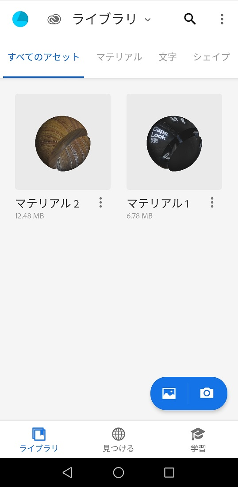
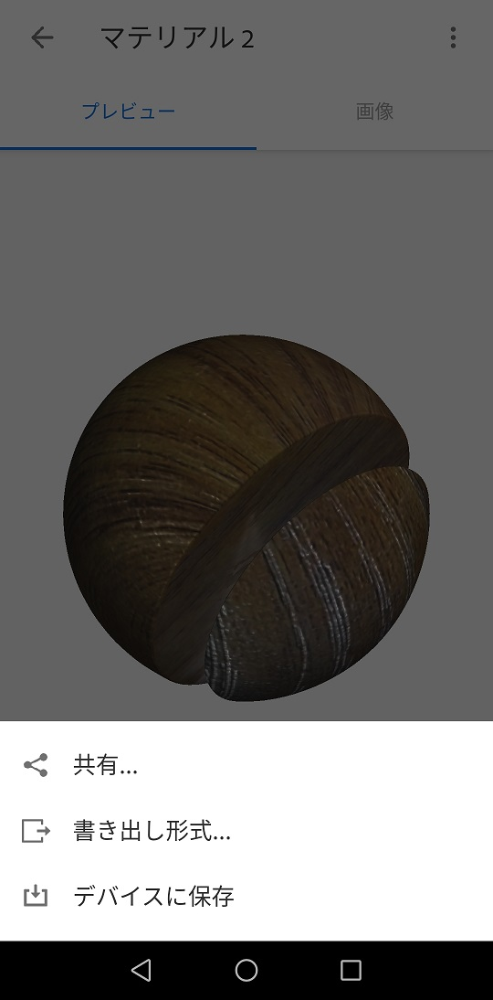
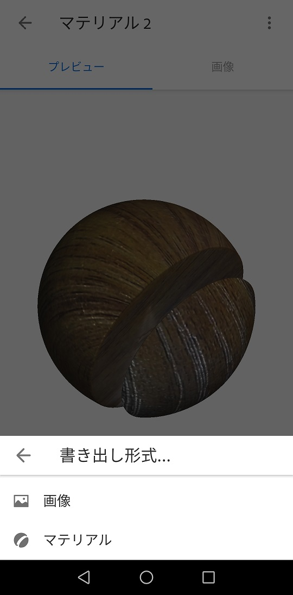

{kind=link}
{kind=link}
{kind=link}
{kind=link}

すず様作 すず式ミクダヨーさんをお借りしました！
今までのsdPBRではそう宣われても何言ってんだオメーという調子でしたが、sdPBRにambientCG.com(旧cc0textures.com)などで公開されているPBRマテリアルを取り込むツールを作りました。自分で言うのもアレですが、とても重宝しています。このツールで変換するだけでもとりあえずなんとなくマテリアルとして使える物が出てきますが、細かい所を自分で詰めていくとより良い見た目を得る事ができます。とりあえずマテリアル作成法はちゃんと読んでね！
まず、ツールの在処はtool/MaterialImporterですので、ちょっとエクスプローラで開いてその中のMaterialImporter.exeを起動してみてください
なんだかやる気のない画面ですが、上の横長の空欄になっているテキストボックス付近にambientCG.comからダウンロードしてきたzipファイルをドロップするとsdPBRのマテリアルが自動的に作られます。とりあえず、一丁マテリアルを作ってみましょうか
ツールの起動法が分かったところでambientCG.comにアクセスして、お目当てのzipファイルをダウンロードしましょう。このサイトは法線マップ・roughnessマップ・aoマップなどを納めた物をzipファイルにアーカイブしてまとめた物を配布してくださっている、いわゆるPBRマテリアル配布サイトです。CC0で配布してくださっていますので、自由に利用できます。HDRIHaven.comもそうですが、寄付によって運営されているそうですから興味があればPatreon経由の寄付をご検討ください！
※サイトの外観はこれを書いている時点の物なので、ちょっと違うかもしれませんから、その時は各自で読み替えてね
まず、右のLicence details & FAQを熟読して、どのようなライセンスでテクスチャが配布されているかちゃんと確認しましょう。まず規約を読まねばならないのは日本語だろうと他国語だろうと一緒ですから、建前上、ちゃんと読んでくださいと書いておきます。
そしたら、ページの上の方に、AssetsとCategoriesと書いてありますから、どっちかを押してください
配布マテリアルの一覧が出てきました。いっぱいあります。今回はこのうち、Ground 037というマテリアルを例にしてみましょう。自分で探しもいいですけど、リンクはこちらです。
右の方にzip一覧が有るので、欲しい解像度と形式のzipファイルをダウンロードしましょう。むやみに鯖に負荷をかけるのも宜しく無いですから、1K-JPGをダウンロードしたとして話を進めます。8K-PNGを押しちゃったよ！という人は適宜読み替えてね。
ダウンロードが終わったら、zipファイルをさっきのMaterialImporterの横長の四角いテキストボックス付近にドロップして、はじめるボタンを押してください
こんな風にzipに入っているテクスチャマップをこれから作るマテリアルに反映するか確認が次々出てきます。MaterialImporterでは現在のところ、RGBAの4チャンネルを使えるPNGファイル2枚で合計で最大8チャンネル分までのテクスチャマップを施したマテリアルのみ扱います。DirectX9の制限のため1つのマテリアルから大量のテクスチャを参照すると読み込めなくなったりするので、とりあえずこういう仕様にしていますから、全部詰め込めない場合は重要そうなパラメータ分だけ詰めてください。
特に、baseColorはモデラ諸氏が設定してくださっている事が大半ですから、必要ない事も多いでしょうし、Heightマップも必要ない事が多いです。これで4チャンネル分浮きますから、大概のマテリアルは8チャンネルで賄う事が出来ると思います。また、Metallicマップもマテリアルが全面金属で錆びた所も無い場合は全部1が入っているはずですから、わざわざテクスチャにする意味が無いのでマテリアルを出力してからfxファイルをいじってmetallicパラメータに1を代入すれば良いです。
選択が終わるとマテリアルファイル(Ground037_1k-JPG.fx)と、テクスチャパック(Ground037_1k-JPG_*.png)が作られました、とメッセージが出て完了です。MMDで読み込みましょう
ウィンドウ内にも書いてありますが、tool/MaterialImporter/tmpディレクトリにzipファイルの中に入っているテクスチャファイルが溜まっていきます。これらの作業用ファイルは自動的には削除されないので、頃合いを見て手動で削除してください。
同名のマテリアルファイルがあった場合は、特に確認もなく上書きされます。
テクスチャとして対応している形式(zipファイルの中に入れられるファイル形式)は、PNG,JPEG,BMP,GIF,TIFFです。現状ではHDRファイルやDDSファイルに対応してません。
作ったマテリアルをテストしましょう。material/materialImporterフォルダに新しく作ったマテリアルが入っています。sdPBRのセットアップを終えたpmmファイルに、tool/板ポリ.xなどを読み込み、material/materialImporter/Ground037_1k-JPG.fxを割り当ててみましょう
すず様作 すず式ミクダヨーさんをお借りしました！
ちゃんと表示されましたか？先に述べた通り、これだけではちょっと物足りなかったり表示が少しおかしく感じるかもしれません。解決法については後述しますが、PBRマテリアルの入ったzipをダウンロードすればすぐにマテリアルとしてMMDから使えるのは便利でしょう！？
次は、Adobe Captureで作った(撮った？)マテリアルを変換する方法について説明しましょう。別に必須ではないのでご興味とスマホがあればどうぞ。
Adobe Captureはスマホ用のアプリケーションでして、写真を撮るとそれを元にマテリアルを作ってくれるという夢のようなアプリケーションです。実際使ってみると夢のようだけどわりと現実的なモノであると分かりますけど、とても役立つのは間違いないと思います。ともかく、LIDARなどが無くても法線マップとroughnessマップを書き出してくれるのは偉いと思います。
さて、iPhone用なりAndroid用なりのAdobe Captureをお使いのスマホにインストールしてください。AppleStoreやGooglePlayにあります。
インストール出来たら起動して、一枚撮ってみましょう。以降はAndroid版の2021年3月時点での画面を元に説明しますから、細かい所が違うかもしれませんので、そこはご了承下さい。
まず、起動して右下付近のカメラのアイコンをタップするとこのように撮影モードになります。撮影モードで画面下の方にあるマテリアルをタップするとマテリアルとして撮影するモードになりますから、この状態でシャッターボタンを押して撮影しましょう
撮影したらこの画面でマテリアルの調整を行います
※ここでメタリックを設定できるようになってますが、そういうテクスチャが生成されるわけではないので、そのままではsdPBRには反映されません。メタリックパラメータを再現したい場合は、*.fxファイルを編集してください。
画面右上の矢印をタップして撮影モードに戻ったら、シャッターボタンの左の×アイコンをタップしライブラリ画面に移動します
  
ライブラリ画面で、さっき撮影したマテリアルを選択し、書き出し形式→マテリアルをタップします。その後、共有メニューからPCへzipファイルを転送します。
あとは先ほどのambientCG.comからDLしてきたzip同様、MaterialImporterにドロップしてはじめるボタンを押せばマテリアルが作られます。
できたかな！？
このようにMaterialImporterは使うのが非常に簡単だと思います。機能も必要最低限しか盛り込んでいません。色々と欲しい機能が無くもないのですが、盛り込んでいくと学習コストがかさみ、使い勝手も悪くなる上に変なバグが混入しやすくアップデートも鈍るという事が容易に想像できます。基本的に放置されているけどたまに要望が来ると良い気になって安易にホイホイ応えているようなソフトウェア作者で陥りやすい事です。機能の取捨選択はちゃんとやった上で設計・実装しているはずなのでそこがブレてはだめなんですね。
そんなわけで、読み込んだマテリアルの微調整の仕方についてちょっと触れておきましょう。
多分heightマップのせいです。重いのが気になる場合は、#define HEIGHT_FROM ... で始まる行を以下のようにコメントアウト(行頭に//を付ける)してください。凹凸感は欲しいけどチラつくのが気になる場合はheightScaleを下げましょう。
//#define HEIGHT_FROM ...
heightマップというのは建物の壁のようにある程度広くて平らな面に対して法線マップだけでは凹凸感が物足りない、なおかつあまり視線に対して水平にならないような面に対して適用すると良い効果が得られます。あまり何にでも使うような物では無いのですが、意外な使い道も有ったりしますから、各自で試行錯誤してみてください
まず、重くせずに何とかしたい場合は、normalScaleを加減するのが良いでしょう。このパラメータは1より大きくしても問題は有りません。MaterialImporterのデフォルトではなんと-1です。どうも一般に通用しているDirectX準拠の法線マップとsdPBRの法線マップの方向は逆みたいで、こういうことになってしまいました…。ですので、基本的には0より小さい値の範囲で調整する事になると思います。
それから、以下のようにNORMAL_CAVITYシンボルを有効にすると、法線マップの凹凸に合わせて自動的にaoが濃くなるのでホリが深くなったように見えます。ほとんど負荷は変わらず、ちょっとした効果があります。heightマップの適用されている場合などは特に効果が分かりやすいです
#define NORMAL_CAVITY #define NORMAL_CAVITY_POWER 1.0
この効果はNORMAL_CAVITY_POWERの値によって調整ができ、大きくするほど効果が濃くなります。1より大きくしても問題は有りません(マイナスの値を入れる事は想定していません)
凹凸感が更に欲しいけどチラつくのはイヤだ！重くなってもいい！という場合はheightScaleを適宜増やし、以下のようにPARALLAX_LOOPCOUNTを増やします。
#define PARALLAX_LOOPCOUNT 100
この値はデフォルト(PRALLAX_LOOPCOUNTがマテリアルファイル内で定義されていない時)は15です。値を増やすとheightマップの高さ方向の正確さが増すので段々が目立たなくなっていきますが、シェーダ自体が重くなり、読み込みにも時間が掛かるようになります。いずれにしてもheightマップはその性質上、面が視線に対して水平な時には効果がありません。あくまでポリゴンをどうしても増やしたくないしシェーダで誤魔化したいんじゃ！という時のためのテクニックです。本来であればテッセレーションといってポリゴンをシェーダで細かく割って増やした頂点の位置をシェーダで操作するんですが、DirectX9はテッセレーションに対応していないのでこういう実装になっています…
roughnessLoopsなどの**Loopsパラメータをいじりましょう。本来、マテリアルにテクスチャが複数用意されている場合はいくつも書き換える必要があるんですが、**Loopsの値は全部揃えて置くのが一般的なので、MaterialImporterでは以下のように一個の変数を定義して全部のマテリアルに適用していますから、以下の一か所を書き換えればOKです
const float loops=1;
このloops変数の値を1以外にすればテクスチャの拡大・縮小が出来ます。値が大きいほど表示は細かくなり、小さくすると伸びていきます
非金属の場合はspecularマップが入ってないからだと思われます。specularを物質に相応の値に設定しましょう。土やブロック塀などのデコボコした物体なら0のままでも良いですが、ある程度ツルツルした物体ならIORtoSpecular関数を使って物体の屈折率相当の値を入れましょう。
金属なのに光沢が無いと感じられる時は、roughnessパラメータを下げましょう。また、マテリアルの問題ではなくskyboxに使われている画像のダイナミックレンジが足りない事も考えられます。単色ベタ塗りに近い画像が指定されていると光沢感が失われます。
また、ニスを塗った材質や皮脂のテカりを表現したい場合は、clearcoat,clearcoatGlossを追加するのも良いでしょう
光源との相性の問題もありますから、まずはsdPBR.pmxの環境色暗くモーフを調整したり、直接光の強さを加減してみましょう。
specularマップが入っている場合はspecular=0.5などとして値を1から下げます。そうでない場合はroughnessマップを編集しましょう。編集するのがどうしても面倒なときはroughnessに1より大きい値をセットしたくなるかもしれませんが、roughnessが1を超えている時の動作は未定義なのであまりお勧めしません。どうしても気になる場合は、むしろ#define ROUGHNESS_FROMの入っている行をコメントアウトして、roughnessマップ自体を無効にした方が良いでしょう。
subsurfaceパラメータを調整しましょう。後ろや横から光が入ってくる雰囲気がちょっと出ます。ちょっとね。
人の肌の場合は、pre-integrated skin シェーディングモデルを適用してください
半透明素材を作りたい場合はMaskマップを適宜追加・調整する必要が有ります。描画順の影響を受けるので配置に注意が必要です
MaterialImporterで作ったマテリアルは、そのままでは拡張シェーディングモデルが適用されていないので、iridescenceなどを有効にしたい場合は対応する拡張シェーディングモデルを適用してください。
{kind=link}
{kind=link}
{kind=link}
{kind=link}
{kind=link}
{kind=link}
{kind=link}